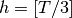
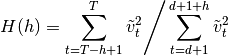
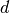
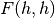
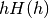
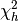
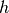

statsmodels.tsa.statespace.varmax.VARMAXResults.test_heteroskedasticity¶
-
VARMAXResults.test_heteroskedasticity(method, alternative='two-sided', use_f=True)¶ Test for heteroskedasticity of standardized residuals
Tests whether the sum-of-squares in the first third of the sample is significantly different than the sum-of-squares in the last third of the sample. Analogous to a Goldfeld-Quandt test.
Parameters: method : string {‘breakvar’} or None
The statistical test for heteroskedasticity. Must be ‘breakvar’ for test of a break in the variance. If None, an attempt is made to select an appropriate test.
alternative : string, ‘increasing’, ‘decreasing’ or ‘two-sided’
This specifies the alternative for the p-value calculation. Default is two-sided.
use_f : boolean, optional
Whether or not to compare against the asymptotic distribution (chi-squared) or the approximate small-sample distribution (F). Default is True (i.e. default is to compare against an F distribution).
Returns: output : array
An array with (test_statistic, pvalue) for each endogenous variable. The array is then sized (k_endog, 2). If the method is called as het = res.test_heteroskedasticity(), then het[0] is an array of size 2 corresponding to the first endogenous variable, where het[0][0] is the test statistic, and het[0][1] is the p-value.
Notes
The null hypothesis is of no heteroskedasticity. That means different things depending on which alternative is selected:
- Increasing: Null hypothesis is that the variance is not increasing throughout the sample; that the sum-of-squares in the later subsample is not greater than the sum-of-squares in the earlier subsample.
- Decreasing: Null hypothesis is that the variance is not decreasing throughout the sample; that the sum-of-squares in the earlier subsample is not greater than the sum-of-squares in the later subsample.
- Two-sided: Null hypothesis is that the variance is not changing throughout the sample. Both that the sum-of-squares in the earlier subsample is not greater than the sum-of-squares in the later subsample and that the sum-of-squares in the later subsample is not greater than the sum-of-squares in the earlier subsample.
For , the test statistic is:

where  is the number of periods in which the loglikelihood was burned in the parent model (usually corresponding to diffuse initialization).
This statistic can be tested against an  distribution. Alternatively,  is asymptotically distributed according to ; this second test can be applied by passing asymptotic=True as an argument.
See section 5.4 of [R115] for the above formula and discussion, as well as additional details.
TODO
- Allow specification of 
References
[R115] (1, 2) Harvey, Andrew C. 1990. Forecasting, Structural Time Series Models and the Kalman Filter. Cambridge University Press.